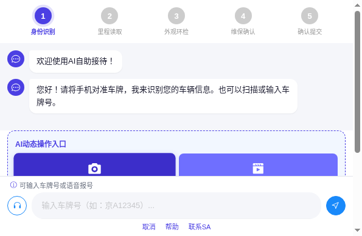
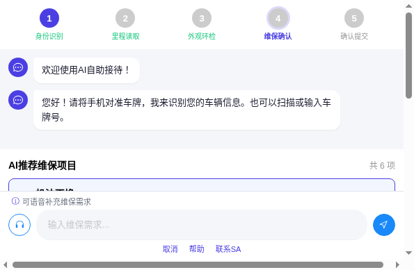
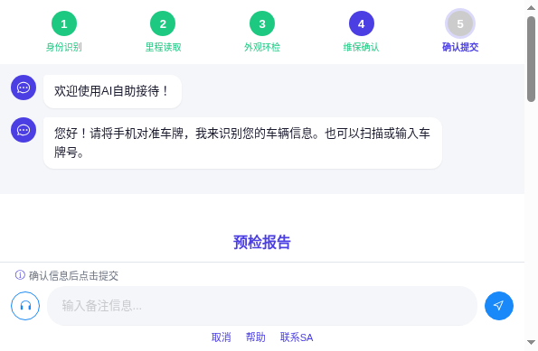
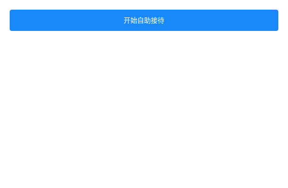
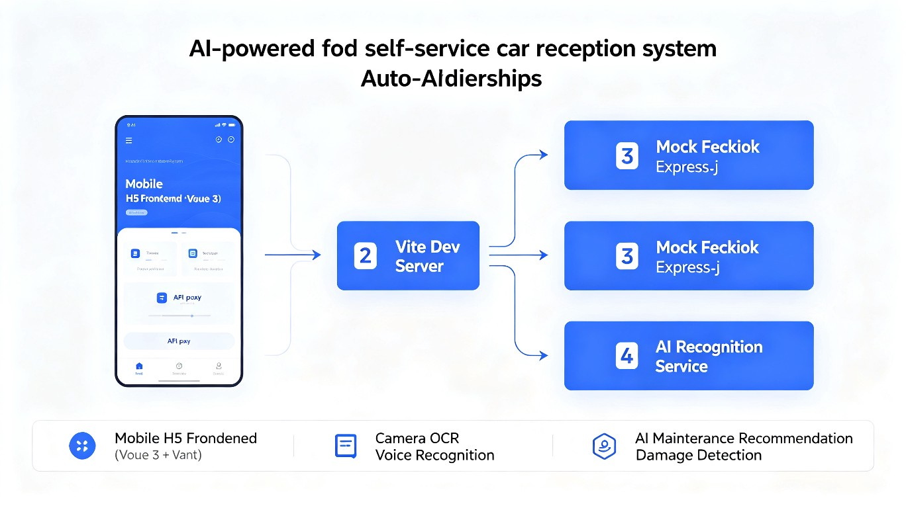
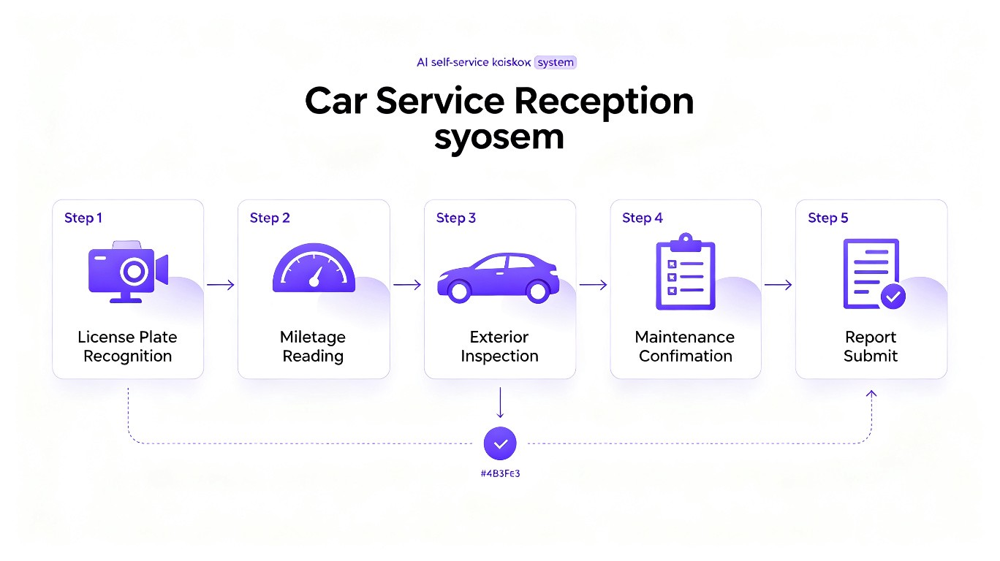

AI 自助接待系统是一款面向汽车 4S 店的移动端 H5 Web 应用，部署在店内自助终端或客户手机浏览器中， 实现客户到店后的全流程自助接待——从车辆识别、里程读取、外观环检、维保推荐到报告提交， 整个过程由 AI 驱动，无需人工介入即可完成预检接待。
核心用户群体：
车牌 OCR、仪表盘里程 OCR、外观损伤自动检测，多种输入方式（拍照/视频/语音/手动）自适应降级
基于里程和车况自动生成维保项目清单，外观损伤自动转化为维修项目，支持客户自定义增减
自动汇总车辆信息、外观检测结果、维保项目清单，一键提交生成工单并通知服务顾问




在传统 4S 店接待流程中，客户到店后需要等待服务顾问（SA）人工接待——手动抄录车牌、记录里程、 绕车检查外观、推荐维保项目。高峰期排队等待时间长达 15~30 分钟， 不仅客户体验差，SA 也被低价值的重复劳动占据大量时间。
我们观察到：随着智能手机普及和 AI 视觉识别技术成熟，客户完全可以自助完成 车辆信息的录入和预检工作，SA 只需在最后环节审核确认、提供专业建议。
技术可行性：车牌 OCR、里程 OCR、外观损伤检测等 AI 视觉技术已在多个行业验证成熟， 手机摄像头质量足以满足预检精度要求。
场景适配性：汽车 4S 店场景标准化程度高（车牌→里程→外观→维保→提交）， 流程固定、交互简单，非常适合自助化改造。
价值取舍：选择 H5 Web 而非原生 App，降低客户使用门槛（无需下载安装）； 选择 AI 引导式交互而非纯表单填写，降低用户操作难度；保留人工介入入口（联系 SA、语音描述）， 在自动化的同时不丧失服务温度。

本系统采用前后端分离架构，包含三个核心服务：
| 服务 | 技术栈 | 端口 | 职责 |
|---|---|---|---|
| H5 前端 | Vue 3 + Vant + Pinia + Vue Router | 5173 | 移动端 UI、交互逻辑、AI 对话引导 |
| Mock 后端 | Express.js + CORS | 8080 | RESTful API、会话管理、工单生成 |
| AI 识别服务 | 统一走 /api/v1/recognize/* | 8080 | 车牌OCR、里程OCR、外观损伤检测、维保推荐 |

使用 TRAE 初始化 Vue 3 + Vant 移动端项目，配置 Vite 代理和 Pinia 状态管理，建立前后端通信基础。
基于 TRAE 的对话能力，逐步实现步骤进度条（StepProgress）、AI 对话框（ChatDialog）、 动态操作入口（DynamicEntry）、底部操作栏（BottomBar）等核心组件， 完成身份识别→里程读取→外观环检→维保确认→确认提交的完整流程。
对接车牌 OCR、里程 OCR、外观损伤检测等 AI 接口，实现相机拍照、视频扫描、 语音识别、文字输入多种交互方式，并设计智能降级策略（如识别失败自动切换手动输入）。
开发基于里程的 AI 维保推荐引擎，实现外观损伤自动转化为维修项目， 生成预检报告（车辆信息 + 外观检测 + 维保清单）并支持一键提交工单。
通过 TRAE 逐步定位并修复多选列表收缩、步骤导航缺失、识别服务异常、 外观损伤不出现在推荐项目、提交失败、电子签名移除等一系列问题，持续优化用户体验。
以下是本项目开发过程中由 TRAE 驱动完成的关键任务对话 Session ID，用于证明作品由 TRAE 开发：
| 类别 | 文件数 | 关键文件 |
|---|---|---|
| 视图 (Views) | 2 | HomeView.vue, ReceptionView.vue |
| 组件 (Components) | 11 | StepProgress, ChatDialog, DynamicEntry, MaintenanceList, PrecheckReport, BottomBar 等 |
| API 接口 | 6 | session.js, recognize.js, recommend.js, precheck.js, request.js, signature.js |
| 状态管理 (Store) | 2 | index.js, precheck.js |
| 工具函数 (Utils) | 2 | ai-entry-config.js, camera.js |
| 路由配置 | 1 | router/index.js（2 条路由） |
| 后端 Mock | 1 | server.js（15+ API 端点） |